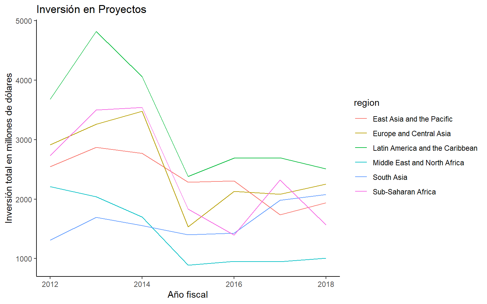
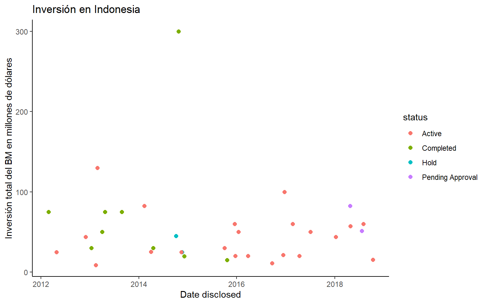
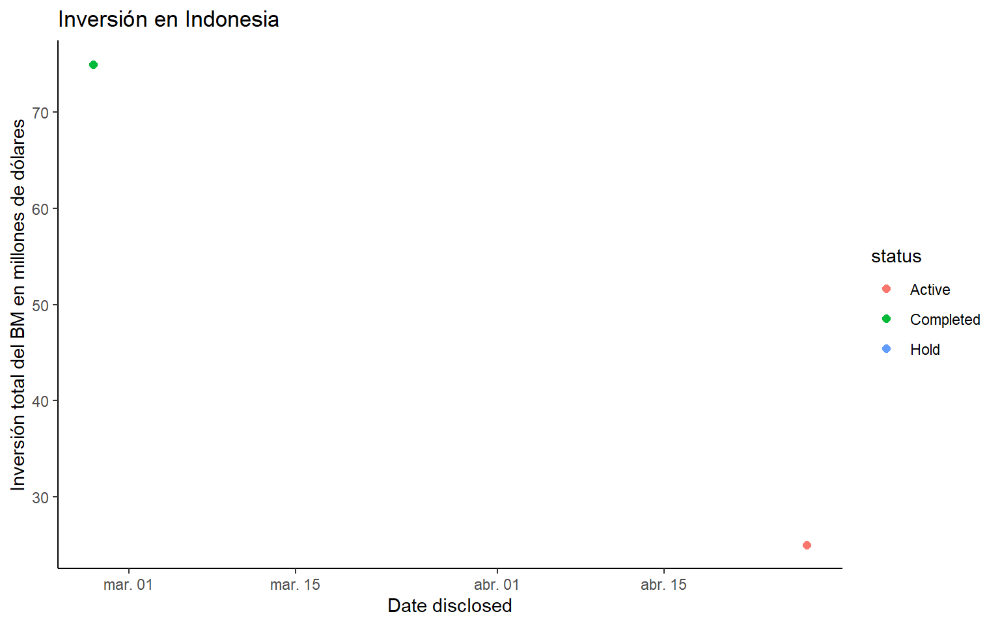
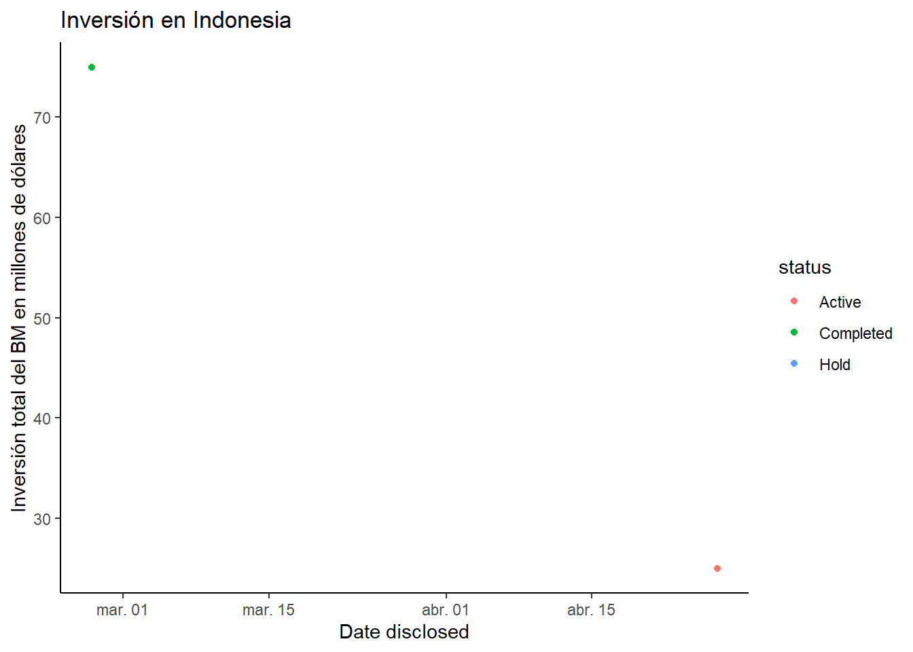
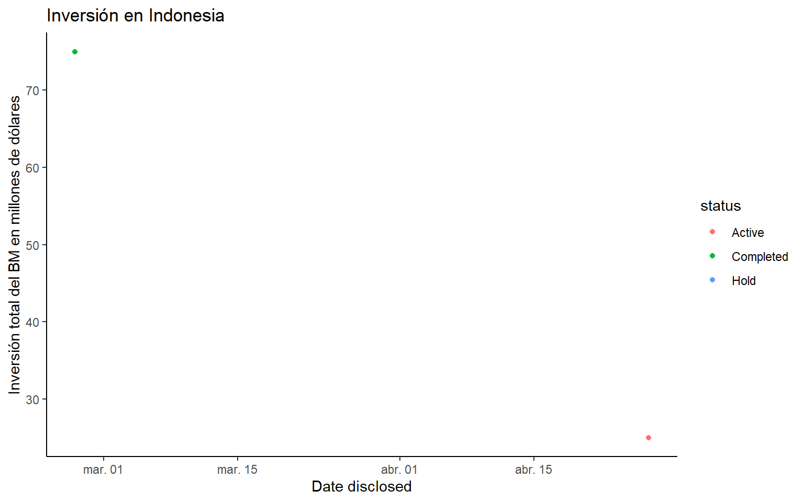
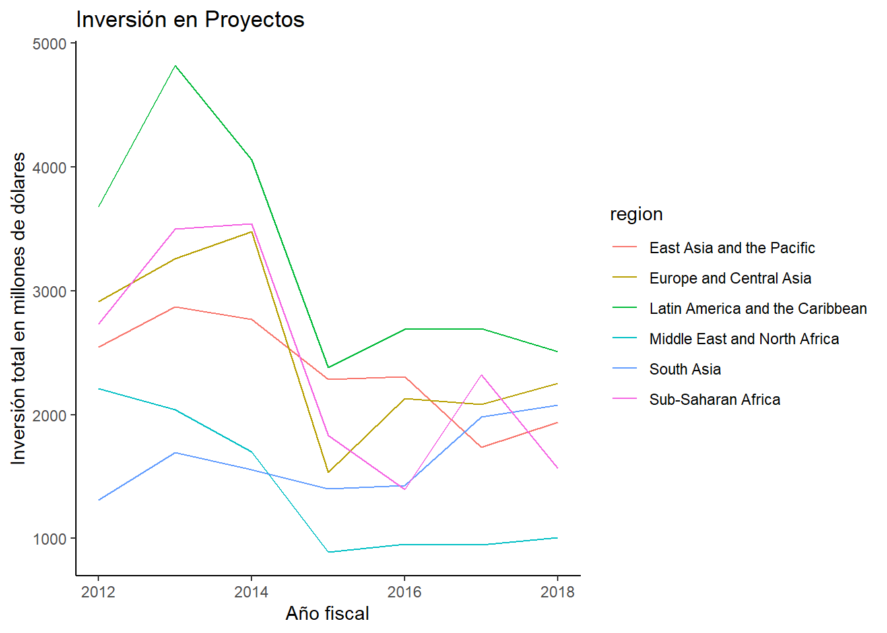
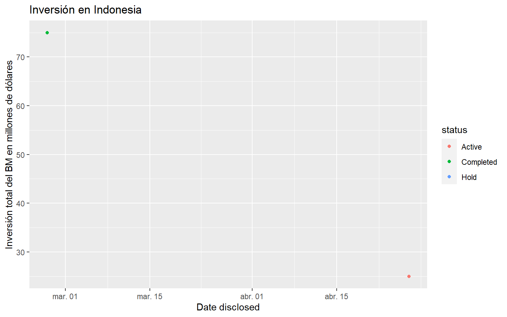
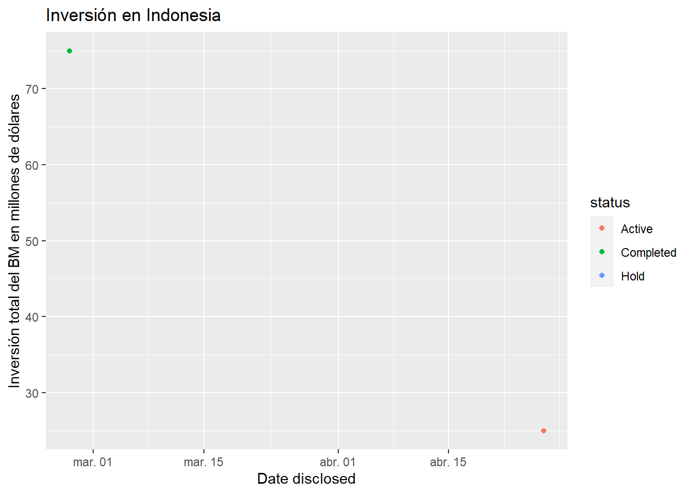

R Markdown
Carlos A. Ar. & DataCamp
Última edición 11 de junio del 2021
Crear el archivo
Para poder crear el archivo R Markdown, puedes usar RStudio. En la pestaña “New File” das click, luego seleccionas “R Markdown” y listo. Este documento te servirá para aprender a editar lo que aparece dentro del archivo.

¿Para qué sirven los archivos R Markdown?
La información puede presentarse de manera “reproducible” lo que significa que se pueden hacer modificaciones al archivo que hagan ver a las personas que lean los cambios que afecten los resultados deseados.
Capítulo 1. Aproximación a R Markdown
Para poder ver los beneficios y herraminetas que tiene R Markdown, haremos uso de información relacionada con la inversión que ha hecho el Banco Mundial en proyectos de servicios públicos en los diferentes países del mundo desde el 2012 hasta el 2018.
Primero se crea una sección de código o “chunk” para dar a conocer la información, un comando que facilita agregar secciones de código es ctrl + alt + i. En este caso incluiremos la información que cargamos en el chunk inicial.
#Es muy recomendable que las paqueterías que se desean usar se carguen previo al análisis
library(readr)
library(dplyr)
library(ggplot2)
#Las paqueterías aquí presentadas se utilizarán a lo largo del código.
investment_annual_summary <-
read_csv(
"https://assets.datacamp.com/production/repositories/5756/datasets/d0251f26117bbcf0ea96ac276555b9003f4f7372/investment_annual_summary.csv"
)
investment_services_projects <-
read_csv(
"https://assets.datacamp.com/production/repositories/5756/datasets/78b002735b6f620df7f2767e63b76aaca317bf8d/investment_services_projects.csv"
)investment_annual_summary## # A tibble: 42 x 3
## fiscal_year region dollars_in_millions
## <dbl> <chr> <dbl>
## 1 2012 East Asia and the Pacific 2548
## 2 2012 Europe and Central Asia 2915
## 3 2012 Latin America and the Caribbean 3680
## 4 2012 Middle East and North Africa 2210
## 5 2012 South Asia 1312
## 6 2012 Sub-Saharan Africa 2733
## 7 2013 East Asia and the Pacific 2873
## 8 2013 Europe and Central Asia 3261
## 9 2013 Latin America and the Caribbean 4822
## 10 2013 Middle East and North Africa 2038
## # ... with 32 more rowsNotemos que se imprime la parte del código y lo que “almacena” esa variable, es decir el código y sus resultados.
También podemos añadir información antes del reporte que se analizará, por ejemplo la descripción de la base de datos y la fuente consultada: “The investment_annual_summary dataset provides a summary of the dollars in millions provided to each region for each fiscal year, from 2012 to 2018.”
Dentro del chunk (sección de código) no se puede poner texto, a menos que se escriba como comentario (lo cual se hace como en el código normal, es decir, con un gato #), por ejemplo:
#Este es un comentario para ejemplificar lo que escribí arriba.
investment_annual_summaryEditar texto
Títulos
Si queremos tener una mejor presentación y organización, podemos agregar títulos o subtítulos. Para crear un título se debe usar el símbolo gato (#). Entre más gatos (#) usemos, más pequeño será el título:
#### Título 1
##### Título 2
###### Título 3Se vuelve en:
Título 1
Título 2
Título 3
Resaltar información
También es posible querer alguna edición de texto que permita al lector tener atención en algo, por ejemplo:
_itálicas_, *itálicas*;
__bold__, **bold**;
~~tachar~~.Que se ve como:
itálicas, itálicas;
bold, bold;
tachar.
Alineación del código
Justificado
#<div style="text-align: justify">al inicio y#<div/>al final.Centrado
#<div style="text-align: center">al inicio y#<div/>al final.A la izquierda
#<div style="text-align: left">al inicio y#<div/>al final.
Formato tipo código
Podemos hacer que el texto escrito se vea en el formato del código (para dar a notar que nos referimos a un objeto del código) de la forma investment_services_projects. Para obtener esta esritura se pone el texto investment_services_projects dentro de dos comillas invertidas ``.
Agregar referencias
Enlaces de internet
Agregar parablas de referencia al link del cual obtuvimos la información es algo muy útil, eso se hace de la siguiente forma: primero se colocan corchetes dentro de los que se ecribirá la palabra que el lector seleccionará y se dirigirá a la página web que desea mostrar, posteriormente se coloca un par de paréntesis dentro de los que estará la liga de la página web. Es importante que no haya espacios entre los corchetes y los paréntesis.
Ejemplo. [enlace] (dirección.de.enlace)
La información aquí presentada viene del Banco Mundial.
Enlaces al propio texto
Para poder llegar a alguna parte específica del texto, podemos usar una referencia hacia el mismo poniendo en el título al que queremos dirigirnos la siguiente sintáxis: #### Título 1 {#tit1} para poder llegar a dicho título ponemos lo siguiente:[Enlace a titulo1] (#tit1) en el texto del cual querramos llegar al título.
Agregar imágenes
Podemos también agregar imágenes con una sintáxis parecida a la anterior, es decir, poner un par de corchetes después de un signo de admiración y posterior a los corchetes añadir el enlace donde se encuentra la imagen (entre paréntesis), como sigue: .
Ejemplo.

El encabezado YAML
El encabezado YAML (Hierarchical data structures) es la parte del archivo R Markdown que contiene, entre otras cosas, el título del archivo, la (el) autora (autor) del mismo, la fecha de creación y el tipo de formato en el que se “tejerá” o cargará el archivo (HTML ó PDF).

Podemos empezar cambiando la forma en que se pone la fecha, en general esta fecha aparece por defecto con el día en que se crea el archivo. Con el código date: ‘r format(Sys.Date(),’%d de %B del %Y’)’ y algunos otros podremos poner la sintáxis de la fecha a nuestra conveniencia. En el ejemplo en negritas la fecha en el archivo aparecerá como: 05 de marzo del 2021 (suponiendo que la fecha en la que se “teje” el archivo es la ejemplificada).
Capítulo 2. Análisis de información.
Filtrar información
Veamos el caso de los proyectos de inversión realizados en Indonesia. Para ello usamos la función filter de la paquetería dplyr.
Nota: es recomendable hacer varias secciones de código (chunks) y que cada chunk tenga un nombre referente a lo que se escribe en el código.
indonesia_investment_projects <-
investment_services_projects %>% filter(country == "Indonesia")
indonesia_investment_projects
## # A tibble: 39 x 13
## date_disclosed country ifc_country_code sector project_name
## <dttm> <chr> <chr> <chr> <chr>
## 1 2018-10-12 00:00:00 Indones~ INS Financial I~ KEB Hana Indonesi~
## 2 2018-08-10 00:00:00 Indones~ INS Financial I~ JV Housing Indo
## 3 2018-08-03 00:00:00 Indones~ INS Tourism, Re~ Trans Corpora
## 4 2018-07-23 00:00:00 Indones~ INS Infrastruct~ Riau IPP
## 5 2018-04-27 00:00:00 Indones~ INS other SSIA Ind Est
## 6 2018-04-25 00:00:00 Indones~ INS Infrastruct~ PT Bajradaya Sent~
## 7 2018-01-10 00:00:00 Indones~ INS Agribusines~ Nabati Indonesia
## 8 2017-11-14 00:00:00 Indones~ INS Financial I~ MBK Loan 2017
## 9 2017-07-05 00:00:00 Indones~ INS Financial I~ IIF USD Loan
## 10 2017-04-12 00:00:00 Indones~ INS Financial I~ Indosurya Finance
## # ... with 29 more rows, and 8 more variables: project_number <dbl>,
## # company_name <chr>, status <chr>,
## # ifc_investment_for_risk_management_million_usd <dbl>,
## # ifc_investment_for_guarantee_million_usd <dbl>,
## # ifc_investment_for_loan_million_usd <dbl>,
## # ifc_investment_for_equity_million_usd <dbl>,
## # total_ifc_investment_as_approved_by_board_million_usd <dbl>Si queremos información más específica, podemos usar de ejemplo la fecha de inicio y fin de un año fiscal.
indonesia_investment_projects_2012 <-
investment_services_projects %>% filter(country == "Indonesia",
date_disclosed >= "2011-07-01",
date_disclosed <= "2012-06-30")
indonesia_investment_projects_2012
## # A tibble: 3 x 13
## date_disclosed country ifc_country_code sector project_name
## <dttm> <chr> <chr> <chr> <chr>
## 1 2012-04-27 00:00:00 Indonesia INS Agribusiness an~ FHP Indonesia~
## 2 2012-04-03 00:00:00 Indonesia INS Financial Insti~ LMS Toll Proj~
## 3 2012-02-27 00:00:00 Indonesia INS Financial Insti~ CIMB Niaga Sr.
## # ... with 8 more variables: project_number <dbl>, company_name <chr>,
## # status <chr>, ifc_investment_for_risk_management_million_usd <dbl>,
## # ifc_investment_for_guarantee_million_usd <dbl>,
## # ifc_investment_for_loan_million_usd <dbl>,
## # ifc_investment_for_equity_million_usd <dbl>,
## # total_ifc_investment_as_approved_by_board_million_usd <dbl>
#Si queremos conocer la inversión total que se hizo en Indonesia podemos añadir una columna:
indonesia_investment_projects_2012_total <-
indonesia_investment_projects_2012 %>% summarize(
sum_total_investments = sum(
total_ifc_investment_as_approved_by_board_million_usd ,
na.rm = T
)
)Insertar resultados en el texto
Para poder usar algún resultado calculado dentro de los chunks en el texto, se usa la sintáxis ‘r resultado_deseado’ (en vez de las comillas simples, se usan comillas invertidas), por ejemplo:
The total investment amount for all projects in Indonesia in the 2012 fiscal year was 100 million dollars. Lo cual se obtuvo de la sintáxis ‘r indonesia_investment_projects_2012_total’. Notemos que esto es parecido a editar el texto en forma de código, la diferencia es que añadimos una r y un espacio antes de seleccionar el resultado_deseado.
Lo anterior es un ejemplo de cómo se pueden plasmar en el documento los datos que se han calculado hasta el momento en el código.
Es importante que los resultados se pongan posterior al cálculo en los chunks porque al correr el archivo de R Markdown se hace una lectura ordenada del mismo y por tanto si se requieren resultados antes de su cálculo, habrá un error en la carga del archivo.
Añadir gráficas
Añadir gráficas es muy similar que añadir código, primero se crea un chunk y luego con la función plot o ggplot se crea la gráfica.
Si se quieren gráficas que puedan ser mejor editadas, usar la paquetería ggplot2 es lo más recomendable. En este caso debes cargar dicha paquetería en el primer chunk.
Ejemplo:
ggplot(
investment_annual_summary,
aes(x = fiscal_year, y = dollars_in_millions, color = region)
) + geom_line() + labs(title = 'Inversión en Proyectos',x = "Año fiscal",y = 'Inversión total en millones de dólares')+theme_classic()
Posiblemente no queremos que el código para realizar la gráfica aparezca en el archivo, así que podemos usar echo = FALSE (los detalles aquí)

Dimensiones
Análogo a la especificación echo = FALSE, las funciones siguientes se colocan en el inicio de los chunks.
Usemos las especificaciones fig.width (ancho) y fig.height (alto) para modificar las dimensiones de los gráficos que aparezcan en el documento “tejido”. Estas funciones se hacen al inicio del chunk, por lo que no puedes ver su aplicación en lo que aparecerá al “tejer” el archivo.
## Warning: Removed 1 rows containing missing values (geom_point).
Una forma más resumida es con el comando fig.dim al cual se le especifica un vector fig.dim = c(ancho, largo).
Como a veces no conocemos las dimensiones precisas de los diagramas que queremos presentar, podemos usar la especificación out.width que se usa con un porcentaje (por ejemplo 30%) para que tome el 30% del aspecto en el R Markdown.
## Warning: Removed 1 rows containing missing values (geom_point).
Otro argumento que se puede agregar es la alineación del gráfico en el archivo, la cual puede ser izquierda (‘left’), centro (‘center’) o derecha (‘right’) con la especificación fig.align, por ejemplo: fig.align='right'
## Warning: Removed 1 rows containing missing values (geom_point).
Algo que también nos puede interesar es una descripción o título del gráfico que aparezca en el R Markdown, esto se hace con el comando fig.cap.
## Warning: Removed 1 rows containing missing values (geom_point).Figure 1.1 Esto es un ejemplo de descripción de la gráfica que se muestra
Capítulo 3. Mejorar el código
Crear listas.
Para crear una lista se usa generalmente un asterísco, un guión medio o algún otro síbolo para iniciarla, por ejemplo:
Días de entre semana
- Lunes
- Martes
- Miércoles
- Jueves
- Viernes
Días en fines de semana
- Sábado
- Domingo
Lo anterior se hace usando el guión medio o asterísco, luego un espacio y al final la palabra. Si se desea añadir más subtextos solo se hace una sangría extra.
Es importante que antes y después de cada lista dejes un espacio para que aparezca en el R Markdown “tejido” (En el Knit).
También podemos hacer listas numeradas:
Primer elemento.
Aquí las cosas del primer elemento
Segundo elemento.
Aquí las cosas del segundo elemento
Tercer elemento.
Aquí las cosas del tercer elemento.
Crear tablas
Para hacer una tabla necesitamos un chunk de R con el nombre tables además del código siguiente:
knitr::kable(indonesia_investment_projects_2012_summary, col.names = c("Nombre del Proyecto", "Status", "Total de Inversión"), align = "rcl", caption = "Tabla 1.1")| Nombre del Proyecto | Status | Total de Inversión |
|---|---|---|
| FHP Indonesia I | Active | 25 |
| LMS Toll Project | Hold | NA |
| CIMB Niaga Sr. | Completed | 75 |
La función kable nos ayuda a crear tablas en un formato de caracteres, es decri que no se pueden hacer modificaciones dentro de esta tabla.
Nombre de las columnas
Para agregar el nombre que queremos a las columnas, usamos el argumento col.names
Alineación de las columnas
Dentro de la función kable agregamos el argumento para el alineado de cada columna llamado align. Si queremos que la columna uno se aline a la derecha, la dos al centro y la tres a la izquierda, debemos usar el comando aling = "rcl" que significa r ight, c enter, l eft.
Título de la tabla
Añadimos el argumento caption en la función kable
Hay otras formas de crear tablas que tengan mejores ediciones, con una sintaxis de HTML o Latex
Si deseas conocer más información sobre la edición de R Markdown, da click aquí
Opciones de Código Chunk
Para poder manejar mejor los fragmentos de código en el archivo de presentación podemos incluirlo o no. Las funciones que aquí se presentan deben agregarse en el encabezado de cada chunk, por ejemplo:
``{r, echo=FALSE}
Chunk de código
``Eval
- Si se desea que el código no se evalúe (no se calcule) entonces al inicio del chunk se agrega una especificación
eval = FALSE. Esto evitará que se ejecute esa línea de código aun cuando éste aparezca en el archivo.
Include
- Si se desea que el código se cargue pero que no aparezca éste ni sus resultados en el archivo Markdown (no se vea el código ni los resultados que calcula) entonces podemos usar la opción
include = FALSE. Esta opción hace invisible el código y los resultados por defecto pero sí permite usar los mismos como parte del texto en el archivo (ver sección.)
Echo
- Si queremos que no aparezca el código y sí los resultados entonces se puede usar la especificación
echo = FALSE. Es una práctica usual cuando se presentan gráficas, porque se quiere el gráfico pero no el código con el cual se realiza.
Collapse
Se puede usar
collapse = TRUEsi queremos que el código presentado en el archivo de R Markdown aparezca en el mismo espacio de chunk. Ejemplo:collapse = FALSEpor defecto. Aquí se separan los resultados en dos partes del código.
investment_annual_summary## # A tibble: 42 x 3 ## fiscal_year region dollars_in_millions ## <dbl> <chr> <dbl> ## 1 2012 East Asia and the Pacific 2548 ## 2 2012 Europe and Central Asia 2915 ## 3 2012 Latin America and the Caribbean 3680 ## 4 2012 Middle East and North Africa 2210 ## 5 2012 South Asia 1312 ## 6 2012 Sub-Saharan Africa 2733 ## 7 2013 East Asia and the Pacific 2873 ## 8 2013 Europe and Central Asia 3261 ## 9 2013 Latin America and the Caribbean 4822 ## 10 2013 Middle East and North Africa 2038 ## # ... with 32 more rowsggplot( investment_annual_summary, aes(x = fiscal_year, y = dollars_in_millions, color = region) ) + geom_line() + labs(title = 'Inversión en Proyectos',x = "Año fiscal",y = 'Inversión total en millones de dólares')+theme_classic()
collapse = TRUEse tiene que especificar. Aquí se “juntan” los resultados del código.
investment_annual_summary ## # A tibble: 42 x 3 ## fiscal_year region dollars_in_millions ## <dbl> <chr> <dbl> ## 1 2012 East Asia and the Pacific 2548 ## 2 2012 Europe and Central Asia 2915 ## 3 2012 Latin America and the Caribbean 3680 ## 4 2012 Middle East and North Africa 2210 ## 5 2012 South Asia 1312 ## 6 2012 Sub-Saharan Africa 2733 ## 7 2013 East Asia and the Pacific 2873 ## 8 2013 Europe and Central Asia 3261 ## 9 2013 Latin America and the Caribbean 4822 ## 10 2013 Middle East and North Africa 2038 ## # ... with 32 more rows ggplot( investment_annual_summary, aes(x = fiscal_year, y = dollars_in_millions, color = region) ) + geom_line() + labs(title = 'Inversión en Proyectos',x = "Año fiscal",y = 'Inversión total en millones de dólares')+theme_classic()
Warnings, mensajes y errores
Análogo a las especificaciones anteriores, las funciones siguientes se colocan en el inicio de los chunks por ejemplo:
``{r, echo=FALSE, warning=FALSE}
ggplot(indonesia_investment_projects_2012)
``Warnings
Si no queremos que aparezcan “Warnings” en el archivo final, agregamos el argumento
warning = FALSEal inicio de cada chunk.- Sin Warning:

- Con Warning (por defecto):
## Warning: Removed 1 rows containing missing values (geom_point).
- Sin Warning:
Mensajes
Es probable que también se de información extra de las tablas que se descargaron, si no queremos que esos mensajes aparezcan, podemos agregar la opción
message = FALSE- Con mensaje (por defecto):
investment_services_projects <- read_csv( "https://assets.datacamp.com/production/repositories/5756/datasets/78b002735b6f620df7f2767e63b76aaca317bf8d/investment_services_projects.csv" )## ## -- Column specification -------------------------------------------------------- ## cols( ## date_disclosed = col_datetime(format = ""), ## country = col_character(), ## ifc_country_code = col_character(), ## sector = col_character(), ## project_name = col_character(), ## project_number = col_double(), ## company_name = col_character(), ## status = col_character(), ## ifc_investment_for_risk_management_million_usd = col_double(), ## ifc_investment_for_guarantee_million_usd = col_double(), ## ifc_investment_for_loan_million_usd = col_double(), ## ifc_investment_for_equity_million_usd = col_double(), ## total_ifc_investment_as_approved_by_board_million_usd = col_double() ## )- Sin mensaje:
investment_services_projects <- read_csv( "https://assets.datacamp.com/production/repositories/5756/datasets/78b002735b6f620df7f2767e63b76aaca317bf8d/investment_services_projects.csv" )
Errores
- Si queremos hacer notar cuáles son los errores en algúno de los chunks que hemos creado, se usa el argumento
error = TRUE. Por defecto el argumento deerroresFALSEy esto impide que el archivo de R Markdown se “teja” (Knit-ea) cuando hay errores en algún chunk. Es preferible que esta opción se aplique de manera global al inicio del R Mardown para que se identifiquen y corran todos los chunks con sus respectivos errores.
Capítulo 4. Personalización del informe.
Tabla de contenidos.
Mejor conocida como “índice”, la tabla de contenidos nos permitirá hacer referecia a los contenidos dentro del archivo R Markdown. Es útil porque si se quiere llegar a una sección particular del archivo para enfatizar en un tema, solo se le da click en el apartado que resalta en color azul para llegar a leer dicha parte del documento.
Para crear dicha tabla se debe agregar la sintáxis siguiente (en el encamezado YAML):
html_document:toc: truerepresenta que sí se quiere hacer un índice (tabla de contenidos)toc_float: trueSolo para HTML sirve para que el índice aparezca en todo tiempo del lado izquierdo del documento. Advertencia: de usarse los siguientes dos “subapartados” (o especificaciones) se debe omitir la palabratrue.collapsed: falsepor defectocollapse: true, lo cual implica que el menú estará siempre retraido a los títulos superiores, es decir que si se eligen poner subtitulos en el índice, estos no aparecerán. Al hacercollapsed: falselogramos que no solo los títulos mayores se puedan ver, sino que también los subtítulos.smooth_scroll: falsepor defecto smooth_scroll: true, es decir que se hará una “animación” (o transición suave) para desplazarse al título correspondiente. Si se usasmooth_scroll: falseentonces se evitará el movimiento y llegaremos al título requerido “inmediatamente” (sin suavidad).
toc_depth: 1para determinar el número de títulos en jerarquía a considerar. Si por ejemplo es necesario que aparezcan los capítlos con subcapítulos, entonces se usa un 2, indicando que el título mayor (que se pone con ##, por ejemplo) así como sus apartados (los que tengan ###, por ejemplo) se mostrarán en dicho índice.number_sections: falsepara enumerar los títulos en el índice. Si se escribetrueentonces se enumerarán los apartados del documento. En esta sección notemos que la numeración empieza en cero (0) cuando el títuloayor se ha puesto con dos gatos (##), si se iniciara el título mayor con un gato (#) entonces la numeración (si se desea) iniciará en 1.
Crear un reporte con parámetro.
En este R Markdown hemos trabajado con información especial para Indonesia. ¿Qué pasa cuando nos piden el mísmo análisis pero de otro país? O lo que es peor, ¿qué pasa si nos piden reportes de cada país en América? La manera de solucionar esto es através de los parámetros.
Si queremos que el reporte tenga la misma estructura pero información un tanto diferente (que sea, por ejemplo, la inversión que se ha hecho en México por parte del Banco Mundial) entonces la herramienta que se presenta a continuación es de total utilidad para que los informes se creen con cambiar 10 carácteres y no 1000 líneas de reporte.
La forma de hacer esto es en el encabezado YAML. Se agrega (como en este documento) la siguiente sintáxis:
params:country: Indonesia
Es importante notar que nosotros decidimos el nombre del parámetro que deseamos modificar en el código.
Advertencia sobre la generalidad del código para ser “replicable.” Si se quiere hacer uso de esta automatización, hay que tener especial atención en que todas las referencias a dicho parámetro (que en este ejemplo fue el país) sean modificables.
¿Dónde debemos poner atención?
Si se tenía el comando:
country == "Indonesia"se deberá sustituir porcountry == params$countrydado que al cambiar el parámetro llamado “country” en el encabezado YAML, también se cambiará la referencia y, por ende, el análisis.Si se usa el nombre del país en alguna parte del texto, debe hacerse consistente la referencia al país, si por ejemplo aparece en el texto “… la inversión que hizo el Banco Mundial para proyectos de servicios en Indonesia…” entonces es preferible que el texto esté escrito como “… la inversión que hizo el Banco Mundial para proyectos de servicios en ‘r params$country’…” y en vez de usar las comillas simples, se usen las comillas inversas `.
Si en el nombre de la gráfica se hace uso del nombre, mejor poner títulos más genéricos o cargar el nombre en un vector para ponerlo como título.
En el título del reporte también puede aparecer el país, por lo que se puede poner la misma sintáxis del ejemplo 2 para cambiar dicho país
Multiples parámteros
Se pueden agregar más parámetros como el año, el tipo de proyecto, entre otros. Esto es de utilidad si se requiere, por ejemplo, hacer un análisis de la infersión por año fiscal para cada país y además que los proyectos estén activos actualmente.
Si queremos agregar el año fiscal de estudio y las fechas de inicio y fin del mismo podemos agregar a la sintáxis anterior lo siguiente:
params:country: Indonesiayear_start: 2011-07-01year_end: 2012-06-30fy: 2012
Análogo a lo explicado en la sección anterior, se debe tener cuidado para que el documento sea lo más general posible y la referencia a los parámetros agregados se hagan.
(Ver ejemplo completo en el documento “Ejemplo R Markdown”)
Personalizar el R Markdown
Para poder tener los colres de fonto, fuente, color del título, entre otros detalles, es útil agregar algunas líneas de código que nos ayuden a esto.
En principio veremos los comandos necesarios que deben ir al inicio de todo el archivo R Markdown. Luego se explicará cómo hacer para que creemos nuestro propio estilo sin necesidad de especificar todos los comandos en el mismo archivo de R Markdown, sino hacer una referencia a un archivo con las especificaciones que deseamos.
Para darle un estilo específico necesitamos poner lo que queremos cambiar entre la sintáxis <style> (al inicio) y </style> (al final).
Cuerpo del archivo
Si se desea hacer un cambio de color de letra en todo el “cuerpo” del documento, usamos la sintáxis:
<style>
body{
color: blue;
}
</style>Análogo al código anterior se puede agregar al “cuerpo” del documento el color de fondo, tipo de letra y tamaño de la letra. En tal caso tendremos el ejemplo siguiente:
<style>
body{
color: #024B3B;
font-family: Calibri;
background-color: #F2FCFA;
}
</style>Notemos que los colores no están dados de manera “regular”. Esos colores se obtuvieron de la forma hexadecimal que permite obtener una amplia gama de colores. Es importante incluir el símbolo gato “#” antes de cada código hexadecimal para que se pueda añadir dicho color.
Códigos chunk
Lo anterior es en general para el texto, pero si queremos un color especial para las líneas de código ponemos (despúes de cerrar el body) lo siguiente:
pre{
color: #273A00;
background-color: #E4F9BB;
}Índice del archivo
Si se desea también cambiar el diseño del índice (tabla de contenido) agregamos (de preferencia antes del body) lo siguiente:
#TOC {
color: #022A3D;
font-family: Calibri;
font-size: 16px;
boder-color: #026696;
}Encabezado del archivo
Si además queremos agregar propiedades particulares al encabezado (título, fecha y autor) entonces usamos (de preferencia antes de #TOC):
#header {
color: #081137;
background-color: #C6DBF4;
opacity: 0.6;
font-family: Calibri;
font-size: 20px;
}Si queremos tener detalle tambíen por cada parte del encabezado (el título y el autor tengan distinto diseño, por ejemplo) entonces usamos el código:
h1.title {
color: #092547;
background-color: #375477;
opacity: 0.4;
font-family: Calibri;
font-size: 40px;`
}
h4.author {
color: #223F61;
font-family: Calibri;
}
h4.date {
color: #7C99BB;
font-family: Calibri;
}Ejemplo:
Notemos que la edición de la fuente, colores y demás temrinaría siendo el sifuiente código:
<style>
#TOC {
color: #022A3D;
font-family: Calibri;
font-size: 16px;
boder-color: #026696;
}
h1.title {
color: #092547;
background-color: #375477;
opacity: 0.4;
font-family: Calibri;
font-size: 40px;
}
h4.author {
color: #223F61;
font-family: Calibri;
}
h4.date {
color: #7C99BB;
font-family: Calibri;
}
body{
color: #024B3B;
font-family: Calibri;
background-color: #F2FCFA;
}
pre{
color: #273A00;
background-color: #E4F9BB;
}
</style>Para evitar tantas líneas de código en cada archivo, podemos hacer referencia a un archivo que contenga todas las especificaciones del estilo R Markdown. Esto se hace en el encabezado YAML luego del html_document de la forma:
html_document:
css: nombre_del_archivo_.css_con_extensión_cssLa extensión es llamada css por el significado que es Cascading Style Sheet (CSS).
Este archivo tiene las especificaciones de forma manual, sin embargo para encontrar más contenido sobre la forma de crear los archivos con extensión css, puede hacer diferentes consultas como: esta o esta e incluso esta.
En general se descarga primero el programa Notepad++ aquí, luego crea un archivo con el nombre que desea (en el caso de Ejemplo R Markdown el archivo se llama style) y escribe la sintáxis previamente mencionada sin los #, guarda el archivo en un formato css en la misma carpeta donde tiene el R Markdown y por último agrega la sintáxis que se encuentra prvio a la explicación.
Theme y Highlight
Theme
Posiblemente no tengas muchas ganas (tiempo o conocimiento) para realizar todo el formato de colores para tu Rmd y por ende quieras una opción más viable.
Con el apartado theme en el encabezado YAML
---
title: "R Markdown"
output:
html_document:
theme: default
---Puedes conseguir un tema (colores de fondo, letra, títulos) por defecto sin necesidad de añadir un archivo css.
Las opciones que existen para theme son:
defaultceruleanjournalflatlydarklyreadablespacelabunitedcosmolumenpapersandstonesimplexyeti
Highlight
De la misma manera puede que para tu código, quieras dar una presentación de énfasis a ciertas cosas (por ejemplo, tener un color para las funciones, otro para los comentarios, etc.) por lo cual existe también la posibilidad de agregar los resaltadores (de código).
Para ello puedes usar la sintáxist siguiente:
---
title: "R Markdown"
output:
html_document:
highlight: default
---Las opciones para estos resaltados son:
defaulttangopygmentskatemonochromeespressozenburnhaddockbreezedark
Ya que seleccionaste los temas que más te gustan, quizá también te interesa otra letra. Debes saber que css y lo anterior presentado no están del todo peleado, se puede combinar un higlight particular (de los predefinidos), y hacer a tu gusto el resto del documento.
También se puede modificar el formato del código y elegir un theme particular.
Que un cierto tipo de letra y fondo que no corresponde a los temas predeterminados, pero el código sigue guardando la estructura del expresso que tiene highlight.
Para mayor información consulta unlibro que te ayudará a mejorar tus trabajos en Rmd.